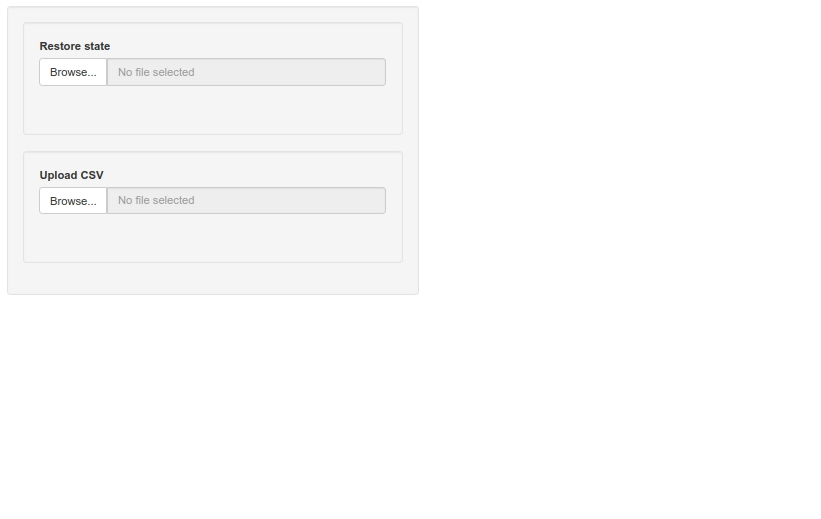

Bookmarking a Shiny app without Shiny bookmarking
I do not well remember, but it seems to me I faced some difficulties when I tried to use Shiny bookmarking to save and restore the state of a Shiny app. These difficulties arose when there were some renderUI in the app or an input updated with an updateXXXinput function.
Then I’m using my own way for bookmarking the state of a Shiny app and restoring it. I’m saving the state of the app in a rds file and I restore the inputs delayed by a renderUI or an updateXXXinput function with the help of the delay function of the ‘shinyjs’ package. Below is an example
library(shiny)
library(shinyjs)
ui <- fluidPage(
useShinyjs(),
br(),
sidebarLayout(
sidebarPanel(
wellPanel( # restore the bookmarked state
fileInput(
"rds",
"Restore state",
accept = ".rds"
)
),
wellPanel( # upload data from a CSV file
fileInput(
"csv",
"Upload CSV",
accept = ".csv"
)
),
conditionalPanel(
"output.uploaded",
wellPanel(
uiOutput("uiX"), # select the variable to be plotted
checkboxInput( # whether to log-transform the variable
"log10",
"Log-transform",
value = FALSE
)
),
wellPanel( # bookmarking
downloadButton(
"saveState",
"Save state"
)
)
)
),
mainPanel(
plotOutput("plot", width = "400px")
)
)
)
server <- function(input, output, session){
data <- reactiveVal() # to store the uploaded data
observeEvent(input[["csv"]], { # read and store the uploaded data
csv <- input[["csv"]][["datapath"]]
data(read.csv(csv))
})
output[["uploaded"]] <- reactive({ # indicator data uploaded
!is.null(data())
})
outputOptions(output, "uploaded", suspendWhenHidden = FALSE)
output[["uiX"]] <- renderUI({ # the widget for selecting a variable
req(data())
selectInput(
"X",
"Select variable",
choices = colnames(data())
)
})
Xloggable <- reactiveVal(FALSE) # indicates whether log-transform is possible
observeEvent(input[["X"]], {
loggable <- all(data()[[input[["X"]]]] > 0, na.rm = TRUE)
Xloggable(loggable)
})
logX <- reactive({ # indicates whether to log-transform the selected variable
Xloggable() && input[["log10"]]
})
observeEvent(list(input[["X"]], input[["log10"]]), { # prevents log-transform
req(input[["X"]]) # if not possible
if(input[["log10"]] && !Xloggable()){
showNotification("The selected variable cannot be log-transformed.")
updateCheckboxInput(session, "log10", value = FALSE)
}
})
output[["plot"]] <- renderPlot({ # the plot
req(input[["X"]])
x <- data()[[input[["X"]]]]
if(logX()){
plot(log10(x), pch = 19)
}else{
plot(x, pch = 19)
}
})
output[["saveState"]] <- downloadHandler( # bookmarking
filename = "state.rds",
content = function(file){
state <- list(
data = data(),
X = input[["X"]],
log10 = input[["log10"]]
)
saveRDS(state, file)
}
)
observeEvent(input[["rds"]], { # restore state
# read the saved state
state <- readRDS(input[["rds"]][["datapath"]])
# restore data
data(state[["data"]])
delay(0, {
delay(0, { # restore the selected variable
updateSelectInput(session, "X", selected = state[["X"]])
delay(0, { # restore the checkbox state (log-transform)
updateCheckboxInput(session, "log10", value = state[["log10"]])
})
})
})
})
}
shinyApp(ui, server)I firstly tried to delay the updateSelectInput directly in the delay function, like this:
delay(0, { # restore the selected variable
updateSelectInput(session, "X", selected = state[["X"]])
delay(0, { # restore the checkbox state (log-transform)
updateCheckboxInput(session, "log10", value = state[["log10"]])
})
})Oddly, that worked in the RStudio browser, but not in Chrome. This is why I added a nested delay function.
Bookmarking:
And now, restoring:
